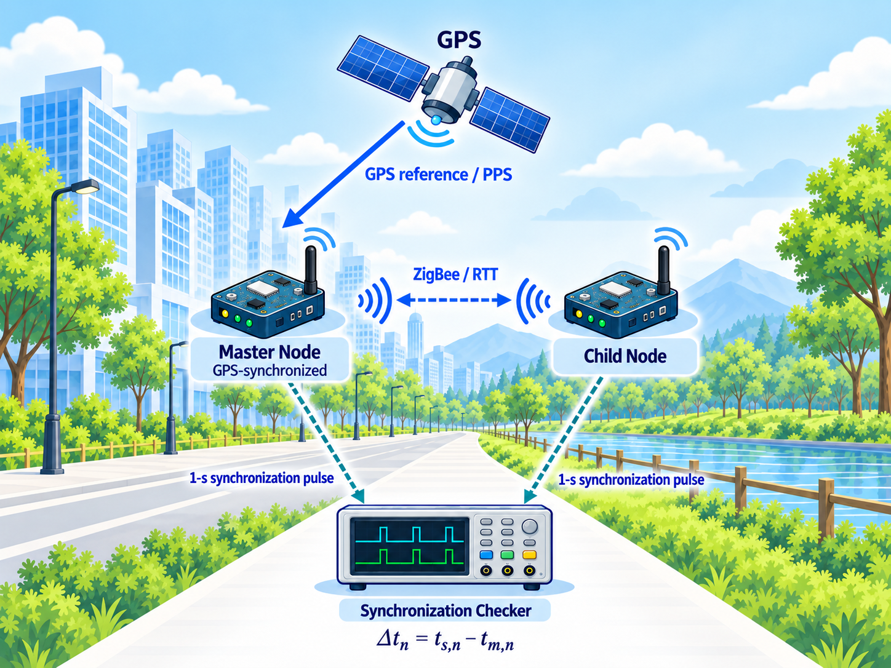
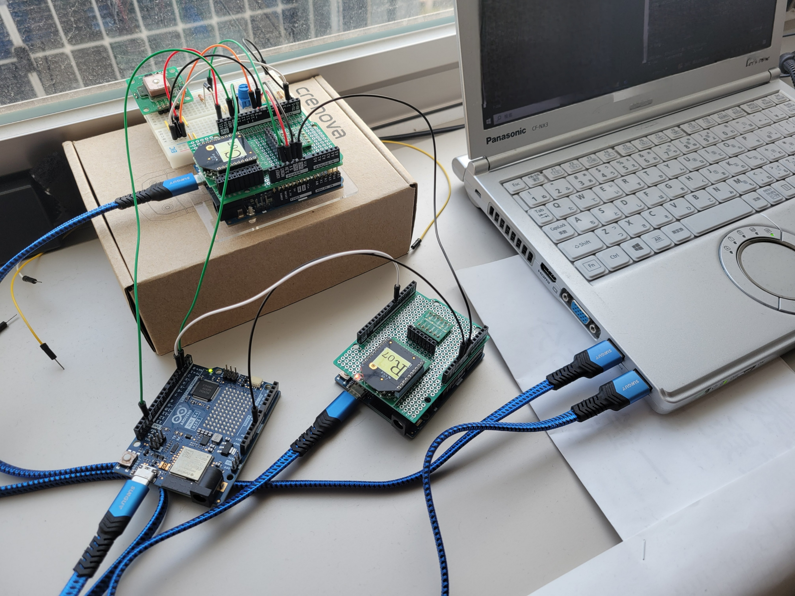
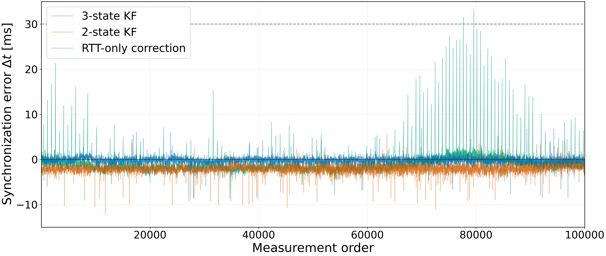

1. Research Overview
Background
Time synchronization is essential for integrating measurements from distributed wireless sensor nodes. In low-cost wireless sensor networks, clock drift and variations in communication delay can degrade synchronization accuracy.
In RTT-based synchronization, the observed clock offset includes not only clock errors but also transmission/reception processing delays and wireless communication-delay variations. These components can affect offset and skew estimation and reduce synchronization stability.
Objective
2. System Overview
The master node is synchronized to GPS time, while the child node estimates its clock deviation through bidirectional ZigBee/RTT communication. Synchronization performance is independently evaluated from the time difference between 1-s synchronization pulses output by the two nodes.

3. Three-State Kalman Filter
The three-state Kalman filter introduces a communication-delay-derived bias \(b_k\) in addition to clock offset and clock skew. The bias term is treated as an auxiliary state to reduce the direct influence of RTT variations on clock-state estimation.
RTT Offset Observation
State Vector
| State | Meaning |
|---|---|
| \(\theta_k\) | Clock offset |
| \(\dot{\theta}_k\) | Clock skew |
| \(b_k\) | Communication-delay-derived bias |
Observation Model
Processing Flow
4. Experimental Setup
The three synchronization methods were evaluated under the same RTT-based wireless system. The time difference between 1-s synchronization pulses from the master and child nodes was measured for approximately 2.8 h.

| Parameter | Setting |
|---|---|
| Master reference | GPS |
| Wireless module | Digi XBee3 Zigbee 3.0 |
| Communication | Two-way ZigBee / RTT |
| Compared methods | Three-state KF / Two-state KF / RTT-only correction |
| Evaluation signal | 1-s synchronization pulse |
| Measurement duration | Approx. 2.8 h |
5. Results
Synchronization errors were compared among the three-state KF, two-state KF, and RTT-only correction. The three-state KF suppressed sporadic large errors exceeding 30 ms and achieved the lowest rate of errors exceeding 10 ms.

Rate of synchronization errors exceeding 10 ms
6. Discussion
RTT observations contain not only the child-node clock offset but also transmission/reception processing delays and variations in wireless communication delay.
By treating the communication-delay-derived bias-like component as an auxiliary state, the three-state KF reduces the direct reflection of temporary RTT variations in clock-state estimation. This suppresses excessive logical-clock correction and contributes to improved synchronization stability.
7. Conclusion
A three-state Kalman filter incorporating a communication-delay-derived bias was investigated for RTT-based time synchronization in low-cost wireless sensor nodes.
Compared with a two-state KF and RTT-only correction, the three-state KF reduced sporadic large errors and decreased the rate of synchronization errors exceeding 10 ms.
Future Work
Future work will model wireless communication delay as an asymmetric and non-Gaussian variation and investigate communication-delay bias estimation using a particle filter.
8. Resources
Additional materials related to this research will be provided here.
9. Contact
Yutaka Hirai
Tokushima Bunri University
Takamatsu, Kagawa, Japan
E-mail: s260304@stu.bunri-u.ac.jp